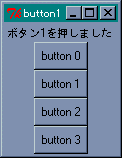
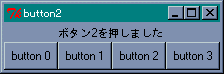
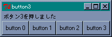
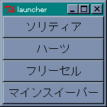
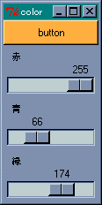
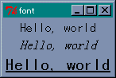

Tcl/Tk の特徴は、ウィジェット (widget) と呼ばれる部品を使って簡単に GUI アプリケーションを作成できることにあります。Tcl 言語だけではたいしたことはできませんが、Tk というツールキットと組み合わせることで強力な言語へと変身します。Tk に用意されている主なウィジェットには表 1 のようなものがあります。
| ウィジェット名 | コマンド | 概要 |
|---|---|---|
| トップレベル | toplevel | 新しいウィンドウを作る |
| フレーム | frame | ウィジェットを格納する枠組みを作る |
| ラベル | label | 文字列やイメージを表示する |
| メッセージ | message | 複数行の文字列を表示する |
| ボタン | button | ボタンを作る |
| ラジオボタン | radiobutton | ラジオボタンを作る |
| チェックボタン | checkbutton | チェックボタンを作る |
| リストボックス | listbox | リストボックスを作る |
| スクロールバー | scrollbar | スクロールバーを作る |
| スケール | scale | スケールを作る |
| エントリー | entry | 1 行の文字列の入力と編集 |
| メニュー | menu | メニューを作る |
| メニューボタン | menubutton | メニューボタンを作る |
| イメージ | image | イメージを作る |
| ビットマップ | bitmap | ビットマップを作る |
| キャンバス | canvas | キャンバスを作る |
| テキスト | text | テキストの入力と編集 |
なかにはあまり見かけないものもありますが、大部分は Windows でもお馴染みのウィジェットだと思います。
ウィジェットを生成するコマンドは、Tcl 言語にはもともと存在しないものです。Tcl から Tk を制御するために拡張されたコマンドなのです。ヘルプでは Tk Built-In Commands を参照してください。たくさんのウィジェットがありますが、入門編では簡単に扱うことができるウィジェットを中心に、実際にプログラムを作りながら説明していきましょう。
まず、ほとんどのウィジェットで共通するオプションを説明します (表 2)。
| オプション | 機能 |
|---|---|
| -foreground (-fg) | 文字や線を描くのに使用する色を指定 |
| -background (-bg) | 背景色の指定 |
| -text | ウィジェット内に表示されるテキスト |
| -textvariable | テキストを格納する変数 |
| -image | ウィジェット内に表示されるイメージ |
| -bitmap | ウィジェット内に表示されるビットマップ |
| -borderwidth (-bd) | ウィジェットの枠の幅 |
| -relief | ウィジェットの枠のスタイル |
| -height | ウィジェットの高さ |
| -width | ウィジェットの幅 |
| -anchor | ウィジェットや表示されるデータの位置を指定 |
ウィジェットの幅と高さは、テキストを表示するウィジェットでは文字数、それ以外のウィジェットはピクセル単位となります。詳しい説明は、プログラムを作りながら進めていきます。プログラミング上達への近道は、実際にプログラムを作って動作を確認することです。Tcl/Tk は手軽に実行できるインタプリタなので、動作確認も簡単に行えます。
まずは簡単に扱えるボタンとラベルから始めましょう。ラベルはウィンドウに文字列を表示するウィジェットです。ラベルはコマンド label で作成します。
button ウィジェット名 オプション label ウィジェット名 オプション
テキストを表示するウィジェットでよく使用されるオプションを示します。
| オプション | 機能 |
|---|---|
| -font | 使用するフォント |
| -underline | 下線つき表示する文字位置 |
| -padx | 水平方向の詰めもの |
| -pady | 垂直方向の詰めもの |
ボタンにはもうひとつ重要なオプションがあります。
たとえば、-command に Tcl/Tk を終了するコマンド exit を指定すると、そのボタンを押すとアプリケーションが終了することになります。
ボタンを作ったら、それをウィンドウに配置しないといけません。Tcl/Tk ではジオメトリマネージャ (Geometry Manager) がウィジェットの配置を担当し、3 種類のマネージャが用意されています。
いちばんよく使われるマネージャが Packer です。Placer はウィジェットの位置を座標で指定するため、並べて表示する場合には設定が少々面倒です。たいていの場合は Packer で用が足りるので、Placer を使う機会はあまりないでしょう。電卓やマインスイーパーのようにボタンを格子状に配置する場合は Gridder が便利です。
それでは簡単な例題として、押したボタンの番号をラベルに表示するプログラムを作ります。最初にラベルとボタンを作ります (リスト 1)。
リスト 1 : ボタンとラベルの使い方
label .l -textvariable buffer
pack .l
foreach n {0 1 2 3} {
button .b$i -text "button $i" -command "push_button $i"
pack .b$i
}
ウィジェット名のつけ方は自由ですが、ピリオド ( . ) から始めなければいけません。単なるピリオド ( . ) はメインウィジェットと呼ばれ、wish が起動したときに作成されるウィンドウを表します。この中にボタンを作るので名前が .l のようにピリオドから始まります。
ウィジェット名の指定は、ファイルのパス指定とよく似ています。最初のピリオドをルートディレクトリ、ウィジェットをファイルと考えてください。
Tk ではコマンド toplevel を使って新しいウィンドウを作ることができますが、この場合もメインウィジェットから派生するウィンドウなので、名前はピリオドから始まります。たとえば新しいウィンドウを .w とすると、そこにボタンを作る場合、ウィジェット名は .w.b0 のようになります。ピリオドがパス区切り記号と同じ役割を果たすわけです。
label コマンドで -textvariable を指定しています。これにより、変数 buffer に格納されている文字列がラベルに表示されます。これはとても便利な機能で、変数の値を書き換えるだけで表示を変更することができます。
オプション -text を使ってもいいのですが、その場合は表示を変更するときに、ウィジェットに設定されているオプションの値を変更しなければいけません。これには「ウィジェットコマンド」を使います。ウィジェットが作成されると、名前はそのウィジェットを操作するコマンドとして使うことができ、その動作を第 1 引数で指定します。この引数のこと「アクション」と呼びます。ほとんどのウィジェットコマンドで共通に使えるアクションが cget と configure です。
ウィジェット名 cget オプション ウィジェット名 configure 引数
cget の場合、指定したオプションの値を取り出します。configure はオプションの値を変更するときに使います。また、引数が省略されると、設定されているオプション値をリストに格納して返します。
通常、ウィジェットコマンドとアクションを区別しなくても困ることはありません。今後は、アクションも含めてウィジェットコマンドと呼ぶことにします。
ボタンは複数作るので、ウィジェット名が重複しないように変数置換を使っています。押したときに実行するコマンドは push_button です。これは proc を使って定義します。"push_button $i" は変数置換が行われるので、設定されるボタンによって引数の値が異なることに注意してください。つまりボタン .b0 が押されたときに実行されるコマンドは push_button 0 になるのです。これでどのボタンが押されたか知ることができます。
pack は後で詳しく説明します。残っている処理は push_button です (リスト 2)。
リスト 2 : ボタンを押したときの処理
proc push_button {n} {
global buffer
set buffer "押したボタンは$nです"
}
とても簡単ですね。buffer は大域変数なので global コマンドを使っています。
それでは実行してみてください。ボタンが 4 つ表示されましたね。そして、ボタンを押すといちばん上に文字列が表示されます。つまり、ボタンを押すという動作によってプログラムが実行されたのです。
 button 1 を押したときの動作GUI アプリケーションの場合、ユーザーからの入力やシステムの状態変化など、ある出来事をきっかけにプログラムが実行されます。この出来事を「イベント (event) 」といい、イベントをきっかけにしてプログラムが起動されることを「イベントドリブン (event driven : イベント駆動) 」といいます。イベントドリブン型のアプリケーションは、一般に次のようなメインルーチンを持っています。
2 から 4 をイベントループと呼び、アプリケーションはユーザーからの入力などのイベントを待ちます。Tcl/Tk でプログラミングをする場合、このイベントループはインタプリタである wish が面倒を見てくれます。
そして、3 の処理に対応する機能が「バインディング (binding) 」です。バインディングは、ウィンドウでイベントが発生したときに、それに応じて定義したプログラムを実行するものです。このプログラムを「イベントハンドラ」と呼びます。ボタンのオプション -command はバインディングの一例です。このほかにもコマンド bind を使って、イベントとプログラムを関連付けることができます。
GUI アプリケーションとしての最低限の機能は wish が面倒を見てくれるので、私達はアプリケーション固有の処理をプログラミングするだけで済みます。したがって、Tcl/Tk でのプログラミングは、ウィジェットの初期化とイベントハンドラの作成が中心となります。
次は、pack について説明しましょう。pack はウィジェットを上から順に詰め込み、ウィンドウに配置するパッケージマネージャです。ボタンの幅がウィンドウより小さいですが、いっぱいに広げるには、-fill オプションを使います。方向は x, y で指定します。両方向に広げるには both を指定します。実際に -fill を 追加して確かめてください。
詰め込む方向を変えるにはオプション -side を使います。指定できる値は top, bottom, left, right の 4 つです。ウィジェットによって詰め込む方向を変えてもかまいません。ボタンを配置する pack に -side left を追加して実行してみましょう。いちばん上にラベルが配置され、その下にボタンが 4 つ左から順番に並べられます。
 -side left を指定し、button 2 を押したときの動作このとき、ラベルはウィンドウの中央に表示されます。これを左側に寄せるには -anchor オプションを設定します。指定が省略された場合は中央となります。指定方法は次の記号を使います。
ｎｗ ━━ ｎ ━━ ｎｅ ┃ ┃ ｗ ｃ ｅ ┃ ┃ ｓｗ ━━ ｓ ━━ ｓｅ
記号はそれぞれ e (East), w (West), s (South), n (North), c (Center) を表します。このほかにも、pack には詰め込んだウィジェットを取り除く命令 (pack forget ウィジェット名) など、いろいろなオプションや命令が用意されています。
 -anchor w を指定し、button 3 を押したときの動作それでは、ちょっと実用的なツールとして、簡単なランチャを作ってみましょう。Tcl にはほかのアプリケーションを起動するためのコマンド exec が用意されています。
exec アプリケーション名 引数 ... [&]
exec に与える引数は、シェルからアプリケーションを起動するときと同じです。引数の最後に & をつけると、そのアプリケーションをバックグランドで実行し、exec の実行はすぐに終了します。そうでない場合は、そのアプリケーションの実行が終了するまで、exec は待つことになります。プログラムはリスト 3 のようになります。
リスト 3 : 簡単なコマンドランチャ button .b0 -text "ソリティア" -command "exec sol &" button .b1 -text "ハーツ" -command "exec mshearts &" button .b2 -text "フリーセル" -command "exec freecell &" button .b3 -text "マインスイーパー" -command "exec winmine &" pack .b0 .b1 .b2 .b3 -fill x ランチャの画面
ボタンを作って pack でウィンドウに詰め込むだけです。これでもれっきとした GUI アプリケーションです。とても簡単に作れましたね。
ところで、ただボタンを作るだけでは面白くありません。テキストやボタンに色をつけてみましょう。Tcl/Tk の場合、色の指定は名前または数値で行います。名前は red, green, blue のように指定します。色の名前は大文字小文字の区別をしません。red と RED は同じ色を表します。使用できる色の名前は Widget Tour のデモプログラムを参照してください。数値の場合は、赤、緑、青の三原色を 16 進数で指定します。指定方法には、次の 4 とおりの形式があります。
色の指定は # から始まり、R, G, B はそれぞれ赤、緑、青の強度を表す数値です。それぞれの色を表す桁数は同じでなければいけません。
1 では、R, G, B が 16 段階なので 4096 色の指定ができます。2 は 256 段階なので、約 1600 万色の指定ができます。3. 4. はほとんど使われることはないでしょう。実際の表示は使用しているハードウェアの環境に依存します。
それでは、R, G, B の値で色がどのように変化するか、サンプルプログラムを作って確かめてみましょう。数値の入力はキーボードから行ってもいいのですが、ここではスケール (scale) というウィジェットを使いましょう。
スケールは整数値を表示し、スライダをドラッグするかスケールをクリックすることで、その値を更新することができます。スケールはコマンド scale で作成します。主なオプションは次のとおりです。
| オプション | 機能 |
|---|---|
| -label | スケールのラベル |
| -from | スケールの最小値 |
| -to | スケールの最大値 |
| -orient | スケールの方向 |
| -showvalue | 値を表示するか |
| -variable | スケール値を格納する変数 |
| -command | 値が変化したときに実行するコマンド |
| -resolution | 解像度 |
-label はスケールの隣に表示する文字列を指定し、-form と -to で値の範囲を指定します。-orient はスケールの方向を指定するもので、horizontal または h を指定すると水平になり、vertical または v で垂直になります。デフォルトでは垂直に設定されます。
-showvalue は現在の値を表示するかを設定します。-variable はスケールの値を格納する外部変数を指定します。スケールの値は、ウィジェットコマンドで求めることもできますが、外部変数を設定した方が簡単です。-command は、スケールの値が変更されたときに実行するコマンドを指定します。このとき、スケールの値が引数としてコマンドに渡されます。たとえば、コマンド foo を指定した場合、実行されるときは foo 128 のようになります。このほかにも、ウィジェットの大きさを設定するオプションがあります。
スケールには configure や cget のほかに、次に示すウィジェットコマンドが用意されています。
get と set 以外のコマンドは使う機会はあまりないでしょう。
それでは、ボタンの背景色を変化させるプログラムを作ります。まず、ボタンとスケールを作成します (リスト 4)。
リスト 4 : ボタンとスライダの配置
button .b0 -text "button" -bg #000
scale .s1 -label 赤 -orient h -from 0 -to 255 -variable red \
-command change_color
scale .s2 -label 青 -orient h -from 0 -to 255 -variable blue \
-command change_color
scale .s3 -label 緑 -orient h -from 0 -to 255 -variable green \
-command change_color
pack .b0 .s1 .s2 .s3 -fill both
スケールの値はそれぞれ red, blue, green という外部変数に格納します。外部変数の値は 0 に初期化しておきます。値が変化したときに実行するコマンドが change_color です。これはリスト 5 のように定義します。
リスト 5 : 色の変更
proc change_color {n} {
global red green blue
set color [format "#%02x%02x%02x" $red $green $blue]
.b0 configure -bg $color
}
change_color が呼び出されるときはスケールの値が追加されるので、それを受け取る引数を定義しないとエラーになってしまいます。カラーコードの作成にはコマンド format を使っています。このコマンドはＣ言語の関数 sprintf と同じです。
format 書式文字列 引数 ...
format は書式文字列の中にデータの出力形式を指定することができます。
たとえば、16 進数を出力するには %x を使います。% が書式の開始を表し、x が 16 進数に変換することを表します。このほかに %d が 10 進数で、%o が 8 進数に変換します。% と x の間に出力する桁数 (フィールド幅) などを指定することができます。簡単な使用例を示しましょう。
% format "<%d>" 10 <10> % format "<%4d>" 10 < 10> % format "<%4d>" 10000 <10000>
最初の例はフィールド幅を指定しない場合で、次の例が 4 に設定した場合です。10 ではフィールド幅に満たないので左詰めされています。10000 のように、フィールド幅に収まらない場合は、指定を無視して出力します。
% format "<%04d>" 10 <0010> % format "<%-4d>" 10 <10 >
フィールド幅の前に 0 をつけると、左側の空いたフィールドに 0 を詰め込みます。- を指定すると右詰めに出力されます。
プログラムに戻ります。format で red, green, blue の値をカラーコードに変換します。数値を 2 桁にそろえるため書式は %02x としています。その後、ボタンの背景色を configure で変更します。これで、スライダの動きによってボタンの色を変化させることができます。
 スライダで RGB を指定するところで、色の選択は Tcl/Tk で便利なコマンド tk_chooseColor が用意されています。このコマンドを実行すると、色を選択するためのウィンドウが開かれます。Widget Tour にデモプログラムがありますので、そちらを参照してください。
今度は色だけではなくフォントも変更してみましょう。フォントの指定には、 いくつかの方法があるのですが、Windows 上ならば次の形式で行えばいいでしょう。
family size style1 style2
family はフォント名を表します。いまあなたが使っているパソコンで使用できるフォント名は、コマンド font families で求めることができます。font はフォントを操作するためのコマンドです。Windows であれば {ＭＳ 明朝} や {ＭＳ ゴシック} といった名前を見つけることができるでしょう。size はフォントの大きさを表し数値で指定します。style1 と style2 はフォントのスタイルで、次の中から選びます。
style1 normal, bold, roman, italic style2 underline, overstrike
style1 と style2 は省略することができます。それでは、フォントを変更してみましょう。リスト 6 のプログラムを実行してみてください。
リスト 6 : フォントの変更
label .l0 -text "Hello, world" -font {{ＭＳ ゴシック} 12}
label .l1 -text "Hello, world" -font {{ＭＳ 明朝} 12 italic}
label .l2 -text "Hello, world" -font {{ＭＳ ゴシック} 16 underline}
pack .l0 .l1 .l2
 フォントをいろいろ変えてみる
テキストを表示するウィジェットはオプション -font で使用するフォントを指定することができます。
このように、個々のウィジェットのフォントはこれで変更できますが、すべてのラベルウィジェットで使用する共通のフォントを設定したい場合もあるでしょう。Tk は各オプションのデフォルト値を持っています。このため、ユーザーは必要なオプションを指定するだけで、簡単にプログラミングすることができました。このデフォルト値はコマンド option を使って変更することができます。たとえば、アプリケーションで使用するフォントを変更する場合は、次のように行います。
option add *font {{ＭＳ ゴシック} 12}
これで、テキストを表示するウィジェットは、指定したフォントを使って表示されます。第 2 引数は値を設定するウィジェットを表すパターンです。パターンは、アプリケーション名、ウィジェット名、オプション名をドットで区切って表しますが、ワイルドカード * やウィジェットを表すクラス名を指定することもできます。クラス名は、そのウィジェットを表す型名と考えてください。
*font の場合は wish.font と同じ意味で、アプリケーション wish で使用するフォントを指定することになります。ラベルに対してフォントを設定したい場合は、*Label.font となります。たいていのクラス名は、ウィジェットを生成するコマンドの、先頭の文字を大文字にしたものです。詳しくはヘルプを参照してください。
たとえば、ランチャープログラムの先頭に次の 2 行を加えてください。
option add *Button.font {{ＭＳ ゴシック} 12}
option add *Button.background green
これで、表示されるボタンのフォントと背景色は、設定された値となります。